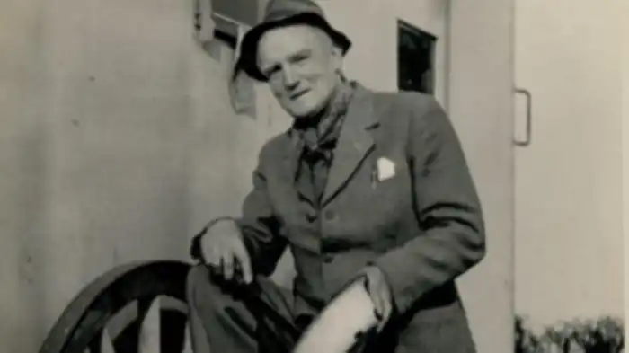

Народився Ірландії в 1895 році. Жив у районі Інчикор Дубліна. З дитинства в нього розвинулася пристрасть до подорожей, яку він пояснював тим, що жив недалеко від жвавого портового міста і ріс із батьком, який багато подорожував, та матір'ю, яка постійно розповідала йому казкові історії про подорожі. Багато разів тікав із дому.
У 18-річному віці, не бажаючи одружуватися з примусом, на борту нафтового танкера, вирушив до Галвестону (Техас).
Пізніше повернувся до Ірландії, займався різними професіями. У своїх книгах позначив себе як коваля, журналіста, суднового пожежника, кіносценариста, бармена, телеведучого, актора, стрільця, каторжника та бродягу. Поділяючи республіканські погляди, включився національно-визвольний рух 1920-х років, став активістом Ірландської цивільної армії. Під час громадянської війни Ірландії 1922—1923 гг. Д. Фелан брав участь у пограбуванні поштового відділення у Бутл (Англія), під час якого сталося вбивство. Хоча вина його не була доведена в суді, він був засуджений до страти через повішення і відправлений до Манчестерської в'язниці. Напередодні страти 1924 року міністр внутрішніх справ замінив її вироком до довічного ув'язнення. Після цього Д. Фелан провів у в'язниці ще 13 років, відбуваючи термін у різних в'язницях. Пізніше використав свій досвід у кількох книгах про тюремне життя. Після визволення з в'язниці в 1937 році Фелан присягнув ніколи більше не жити в чотирьох стінах і повернувся до життя волоцюги. У роки Другої світової війни Д. Фелан виступав проти фашистської агресії. Після звільнення з в'язниці в 1937 році Фелан поклявся більше ніколи не жити в чотирьох стінах і повернувся до життя бродяги. Як і більшість волоцюг, він мав улюблений маршрут; у його випадку це північна дорога А1 в Англії. На цій дорозі, яка звивалась з Лондона в Йорк і назад, він дізнався знання про дорогу від таких персонажів, як Лампі Рудий Лис, Дікі Том Косгроув, Джиммі Скотланд, Стен Людина та Сторновей Слім. Він навчився писати таємничі ієрогліфи, які повідомляли попутникам про те, дружнім чи ворожим є окремий будинок чи ціле село. Він удосконалив мистецтво оповідання – лепет – щоб гарантувати, що перехожий чи господар будинку будуть якомога щедрішими. Він писав свої романи та есеї від руки і надсилав рукопис своєму видавництву з першого поштового відділення, яке йому траплялося. Дебютував у 1937 році. У творах 1930-1940-х років. зображено важке життя ірландського селянина: "Поденники" ("Ten-a penny people", 1938), "Місяць у річці" ("Moon in the river", 1946), "Оповідання біля вогнища" ("Turf-fire tales", 1947). У центрі роману про визвольну боротьбу ірландського народу в 1919—1921 роках. "Зелений вулкан" ("Green volcano", 1938, рус. Пров. 1941) — проблема класових протиріч усередині національного руху. У повісті "…І гвинтівками, і кийками" ("… And blackthorns", 1944, рус. пер. 1947) дано епізоди з життя ірландських селян, показано їхню готовність боротися за свої права. У документально-художніх повістях "Дно" ("Underworld", 1953), "Злочинці в реальному житті" ("Criminals in real life", 1956), "Двадцять років у кайданах" ("Fetters for twenty", 1957), " Дев'ять убивць і я" ("Nine murderers and me", опубл. 1968) Д. Фелан звернувся до зображення декласованого світу волоцюг та злочинців. Першою дружиною Фелана була Дора, від якої народилася дочка Кетрін Мері в 1922 році. Дора померла в 1924 році. Його друга партнерка, Джилл Хейс, була молодою лівою ідеалісткою, яка відвідувала його у в'язниці. Вони одружилися після його звільнення в 1937 році і мали сина Сеумаса. Хейз була поранена в The Blitz у 1940 році та померла через низку проблем із психічним здоров'ям, що спонукало Сеумаса у своєму оповіданні "Неслухняні чоловіки" описати її як "загублену на війні". Пізніше Фелан зав'язав стосунки з Кетлін Ньютон — вони одружилися в 1944 році — яка допомагала виховувати молодого Сеумаса і поділяла незвичайний спосіб життя Фелана. У 1964 році Джим зробив чотири програми про життя бродяг для BBC Wales. Фелан помер у 1966 році, у нього залишилися діти та Кетлін. Кетлін померла в 2014 році. Сеумас помер в Австралії 13 листопада 2016 року.